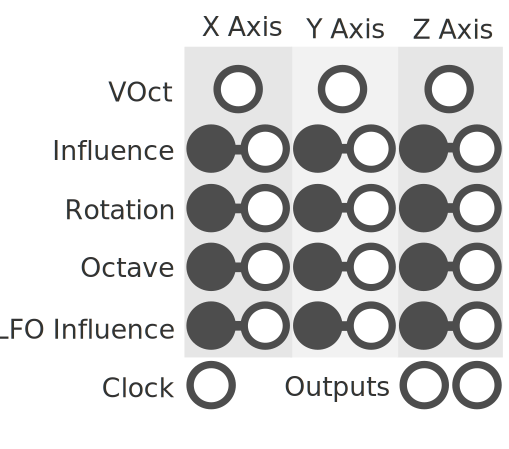

SLURP
Quaternion based oscillation.

The SLURP oscillator has 3 oscillators, one for each rotational axis. Each axis has an LFO that modulates its rotation. Rotating one axis will in turn move the other two axis. The final position of each axis is then projected into 2d space and its positional value becomes the output.
Parameters
Each oscillator (or axis) has a VOct, Influence, Rotation, Octave, and LFO Influence parameter.
VOct Sets the frequency of the axis LFO to the desired note value. This uses the 1V/oct standard.
Influence Sets how much this axis projected position is added to the final output.
Rotation Adds a constant rotation value over time to the axis.
Octave offsets the LFOs frequency by whole octave (0-8).
LFO Influence How much influence the LFO has on the axis.
Clock Offsets the frequency of all LFOs to be in sync with the incoming clock signal.